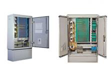

Fiber Optic Cable Cross Connection Cabinet (CCC)（光缆交接箱）

CCC is a connection device in the fiber optic access network for feeder cable and distribution cable. Fiber optic cables are spliced directly or terminated and managed by patch cords for distribution. With the development of FTTx, outdoor cable cross connection cabinet will be widely deployed and move closer to end user.
Features
* SMC or stainless steel plate
* High-performance sealing strip, IP65 grade
* Standard routing management with 40mm bending radius
* Safe fiber optic storage and protection function
* Clear marked for each fiber splice or distribution
* Suitable for fiber optic ribbon cable as well
* Optional external padlock, protecting the keyhole of built-in lock
* Reserved modular space for PLC splitter
* Grounding device of the cabinet locates at the fixing screw of the base for credible performance
* Moisture of base comes out from the down-warded vent
Ordering Guide
NO. |
Type |
Dimension (mm) H*W*D |
Max Capacity (Fiber count) |
1 |
GXF576-YS1a |
1035x550x310 |
96 ports, 2 pieces of 2:32 PLC splitter optional, SMC cabinet |
2 |
GXF576-YS2a |
1035x550x310 |
144 ports, 2 pieces of 2:32 PLC splitter optional, SMC cabinet |
3 |
GXF576-YS3a |
1450x750x325 |
288 ports, 4 pieces of 2:32 PLC splitter optional, SMC cabinet |
4 |
GXF576-YS4a |
1450x750x600 |
576 ports, 8 pieces of 2:32 PLC splitter optional, SMC cabinet |
5 |
GXF576-YJ1a |
1035x550x310 |
96 ports, 2 pieces of 2:23 PLC splitter optional, stainless steel cabinet |
6 |
GXF576-YJ2a |
1035x550x310 |
144 ports, 2 pieces of 2:23 PLC splitter optional, stainless steel cabinet |
7 |
GXF576-YJ3a |
1450x750x325 |
288 ports, 4 pieces of 2:23 PLC splitter optional, stainless steel cabinet |
8 |
GXF576-YJ4a |
1450x750x600 |
576 ports, 8 pieces of 2:23 PLC splitter optional, stainless steel cabinet |